创建数据库步骤如下:
a.服务器名称:输入本机IP.
b.点击"创建数据库",正常情况下会在本机创建停车场使用的数据库文件;
c.点击"连接测试",测试服务器名称指定的主机上数据库文件是否存在;
d.点击"保存连接字符串",正常情况下会提示保存成功.
创建数据库步骤如下:
a.服务器名称:输入本机IP.
b.点击"创建数据库",正常情况下会在本机创建停车场使用的数据库文件;
c.点击"连接测试",测试服务器名称指定的主机上数据库文件是否存在;
d.点击"保存连接字符串",正常情况下会提示保存成功.
软件支持MSSQL2008和MySql数据库引擎.
使用MSSQL2008数据库引擎的,需要额外安装微软MSSQL2008数据库;
使用MySql的,无需单独安装此数据库,本软件已集成.
目前用MySql数据库的系统不能扩展云管理功能,所以若考虑以后要升级使用云管理功能的,请选择
MSSQL2008数据库.
数据库类型设置方法:
打开软件根目录,找到"Config"文件夹,在此文件夹下找到"ExtendConfig"文件,然后用记事本打开此文件.
找到下图所示的行.
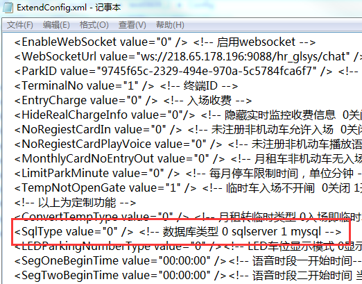
设置"SqlType value"值为"0"表示软件使用MSSQL2008数据库存储数据;
设置"SqlType value"值为"1"表示软件使用MySql数据库存储数据;
以下若无特殊说明,均是在安装了数据库的电脑上操作.
若想获取软件操作详细信息,请参考"车牌识别系统管理软件说明书".
在车牌识别管理软件根目录里找到"CreateDatabase.exe" ,双击打开.
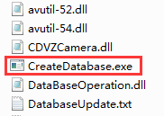
根据所使用的数据库类型不同,数据库文件创建方式有不同.
创建MSSQL2008数据库文件
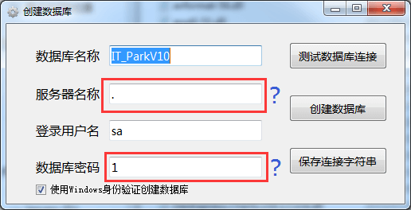
根据安装数据库时定义的实例名和密码对应修改服务器名称和数据库密码.
创建数据库步骤如下:
a.点击"创建数据库",正常情况下会提示创建成功;
b.点击"测试数据库连接",正常情况下会提示连接成功;
c.点击"保存连接字符串",正常情况下会提示保存成功.
创建MySql数据库文件
创建数据库步骤如下:
a.服务器名称:输入本机IP.
b.点击"创建数据库",正常情况下会在本机创建停车场使用的数据库文件;
c.点击"连接测试",测试服务器名称指定的主机上数据库文件是否存在;
d.点击"保存连接字符串",正常情况下会提示保存成功.
在管理软件根目录,找到"ParkUI.exe" ,并右键发送快捷方式到桌面.
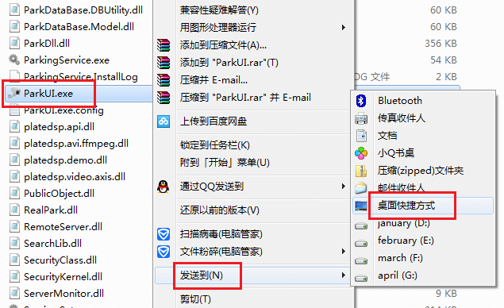
打开管理软件,直接登录,没有密码.
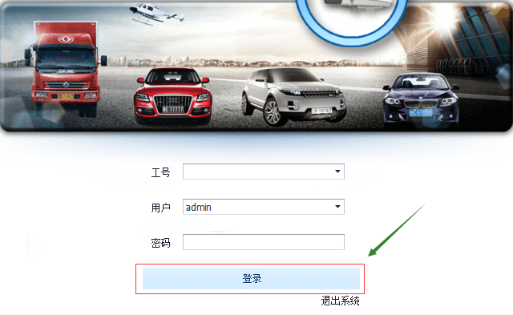
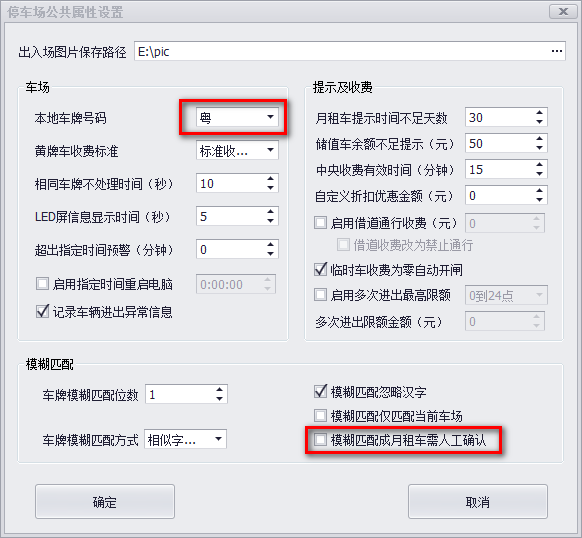
图片保存路径:该路径所在的文件夹会保存车辆进出识别的抓拍图片.
单机管理的停车场此处设置成本地路径即可,多机管理的需要设置成网络路径.
本地车牌号码:根据所在省份修改;
模糊匹配成月租车需人工确认:相似车牌匹配会弹出确认窗口,该选项根据收费员水平合理选择开启.
其它参数如无特殊需求可按上图设置.
建议按上图设置,这样软件会每天凌晨1点定时备份数据库.
报表配置根据电脑硬盘容量和甲方想回看的时间限制合理设置.
建议:在场车辆记录表的数据保留天数设置一个值,如10天,则软件会自动清理10天前进场的车辆.
常见的收费标准都可以用"24小时收费设置"实现.
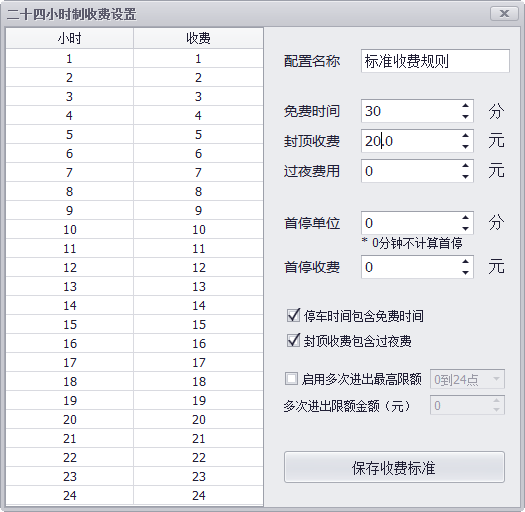
例:上图表示停1个小时收1元钱,停2小时收2元钱...;可免费停30分钟;停车时间满24小时收20元,相当于优惠了4元.
测试收费标准
测试收费标准设置的是否正确.
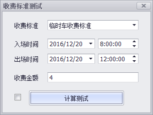
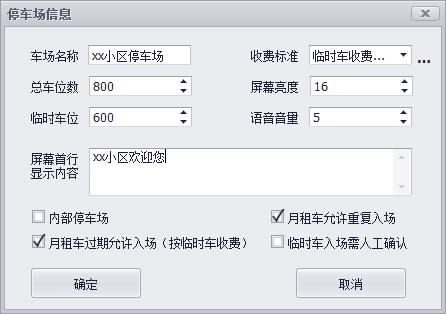
总车位数尽量设置大一点,因为很可能由于停车场设备出现故障导致场内车辆没有识别即放出场,从而使场内可
用车位数少于实际可用。
月租车位数=总车位数-临时车位,上图所示月租车位数为200.
内部停车场:大车场嵌套小车场的,软件里设置小车场时,需勾上此选项.
被定义为内部停车场的车场,车辆可循环进出该车场,只要没有从大车场出去.
根据现场出入口情况增加车道信息.
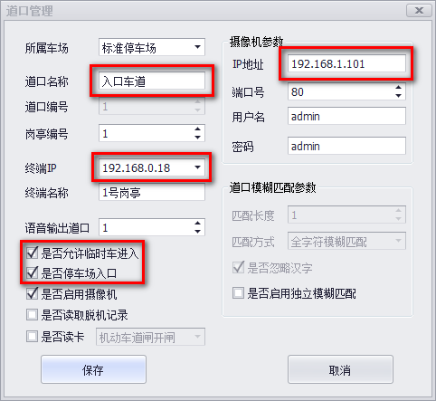
上图红色框选的参数,根据车道情况灵活调整.
终端IP:填写管理本车道摄像机的电脑IP地址.
如上图表示IP是192.168.0.39的摄像机被192.168.0.18这台电脑监控,即只有这个电脑才能看到此
摄像机的监控图像.
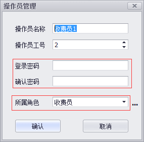
所属角色:角色定义了该类操作员操作软件的权限,请合理选择所属角色.
想在软件登记车辆信息时,必须先将该车的车主信息录入,之后再绑定车辆信息.
新增用户和车辆信息流程如下:
注意到期时间和道口权限.
软件提供了多样的,便利的查询用户的方法.
用户管理列表的首行是查询条件输入栏,支持精细和模糊查询,下面以图示的方式展现软件查询的优越功能.

用户名查询,首行输入'小'进行模糊查询,查询结果只包含用户名字含小的用户
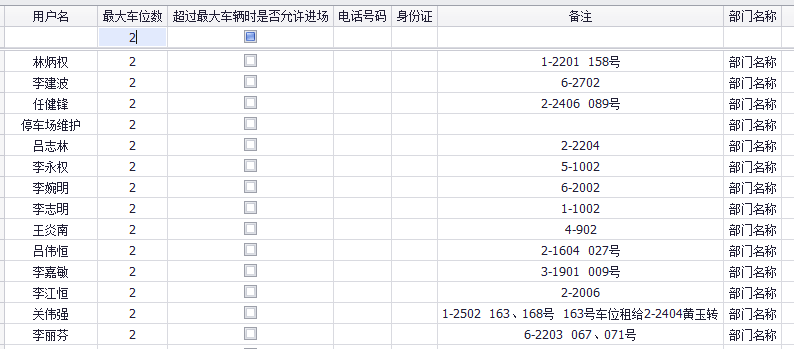最大车位数查询,首行输入'2'进行精细查询,查询结果只包含车位数为2的用户
其它列类似,只需在首行输入条件即可自动筛选符合的记录.
同查询用户操作方法一样,查询车辆也是在列表的首行输入条件查询.
本功能是用来为车辆延期,如下图所示.
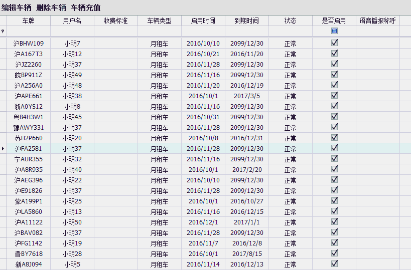
参数"车牌识别共享操作集中说明"完成软件的一些共享设置.
收费员进入实时监控,开始收费工作.
具体操作说明参考"收费员培训资料".
从数据库查询车辆进出详细记录.
举例说明:
如要查询"鄂A8BK78"在2106年12月12日这一天的通行记录:
 上图中在车牌号输入栏只是输入了"K78",这样就可以查询车牌号含有"K78"字符车辆的进出记录,提高查询效率.
如果勾上"精确查询",则必须输入完整的车牌号.
若所有勾选项均勾上,则会查询出所有车辆进出记录.
若想精确查询结果,就在对应勾选项上去掉勾选,然后输入查询条件.
如想查询"优贝"的进出记录:
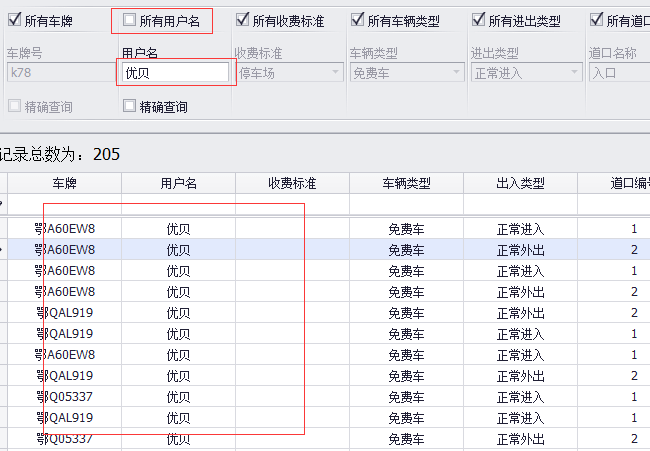
上图中在车牌号输入栏只是输入了"K78",这样就可以查询车牌号含有"K78"字符车辆的进出记录,提高查询效率.
如果勾上"精确查询",则必须输入完整的车牌号.
若所有勾选项均勾上,则会查询出所有车辆进出记录.
若想精确查询结果,就在对应勾选项上去掉勾选,然后输入查询条件.
如想查询"优贝"的进出记录:
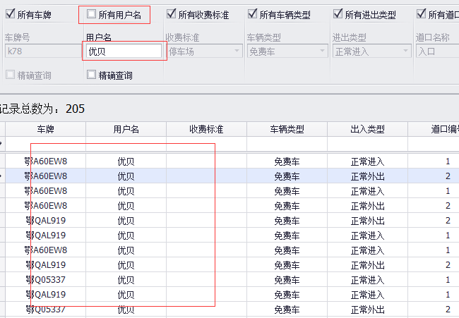
通过首行栏查询时,请将工具栏的所有勾选项都勾上,否则本查询结果是以工具栏查询的结果为基础进行的二次查询.
 记录列表的首行是查询条件输入栏,支持精细和模糊查询,下面以图示的方式展现查询功能.
记录列表的首行是查询条件输入栏,支持精细和模糊查询,下面以图示的方式展现查询功能.

车牌号查询,首行输入'k78'进行模糊查询,查询结果只包含车牌号含'k78'的车辆进出记录
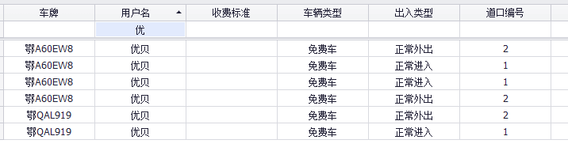用户名查询,首行输入'优'进行模糊查询,查询结果只包含用户名含'优'的进出记录
其它列类似,只需在首行输入条件即可自动筛选符合的记录.
以上介绍的两种查询方法适用本软件所有报表,故以下报表不再赘述。
双击指定的进出记录,会弹出该车辆抓拍的图片,如下图:
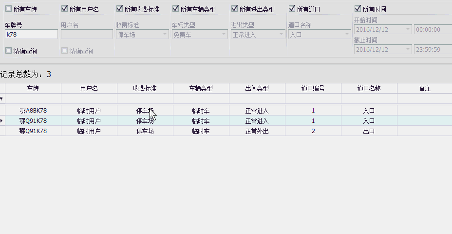
在图片上右键可以选择另存图片.
以下报表可查询图片的方法类似,故不再赘述。
导出到Excel:将查询的结果保存到Excel表格中;
打印:调用本地打印机打印查询结果.
打印小票或者特殊打印要求的,需定制开发.
以下报表本功能类似,故不再赘述。
查询收费员收费的详细记录,包含"中央收费记录表"里的数据.
举例说明:
如要查询操作员"8001"在2016年10月14日的收费情况,如下图:
 上图中可以明确看到该操作员这一天收费的每一笔记录,还有金额总数.
若想更加精细的查询一笔记录,请参考"车辆进出记录表"的查询方法介绍.
上图中可以明确看到该操作员这一天收费的每一笔记录,还有金额总数.
若想更加精细的查询一笔记录,请参考"车辆进出记录表"的查询方法介绍.
进场时间:车辆进场时被识别到的时间.
离场时间:车辆离场时被识别到的时间.
录入时间:该收费记录存入数据库的时间,也即收费员通过软件确认放行的时间.
若想查询某个时间段内的收费记录时,如2016年10月1日到2016年12月12日,设置方法如下:
所有进场时间的开始时间设置为查询的起始时间,即2016年10月1日,截止时间默认不改.
所有出场时间的开始时间设置为查询的起始时间,即2016年10月1日;截止时间为查询的截止时间,即2016年12月12日.